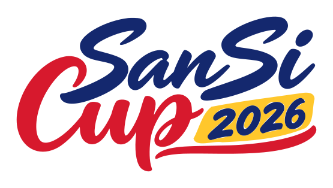
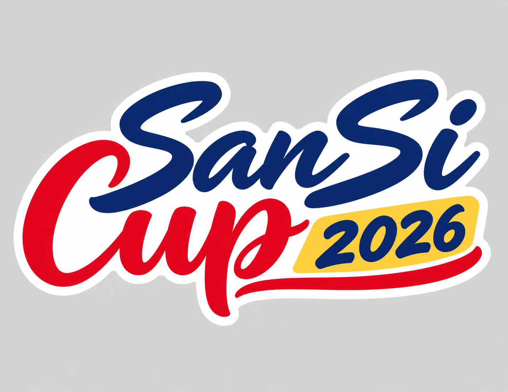
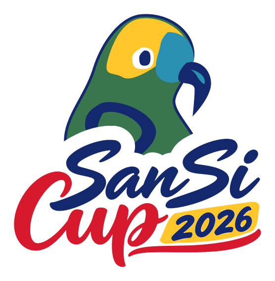
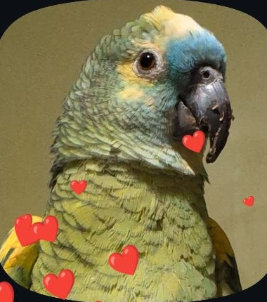
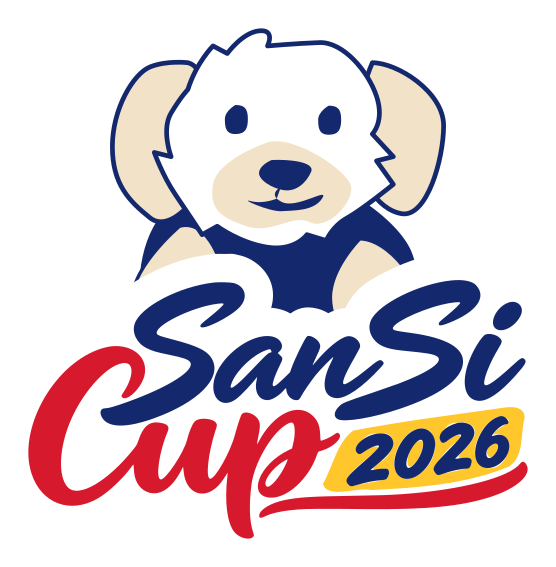
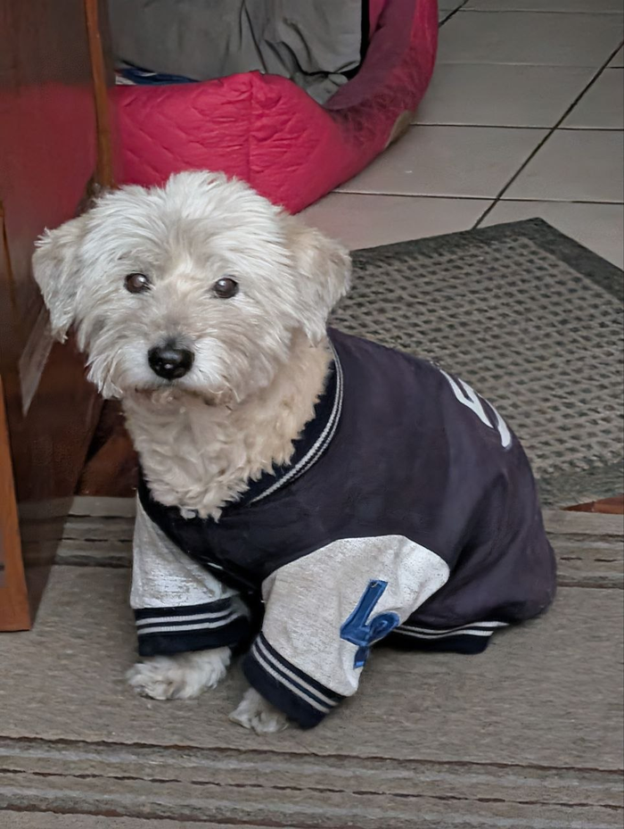
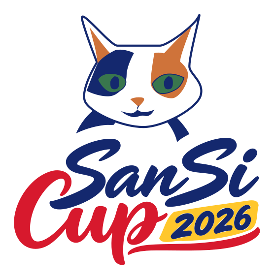
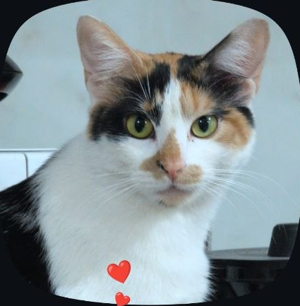

Piloto 01 / 04Firma SanSi CupEl lettering elegido, trazado por colores. Se conservan los remates de la firma.SVG editablePNG transparenteReferencia utilizadaPrueba: 40.0 × 22.6 mmBorde blanco incluido: 2 mm
Piloto 02 / 04GalanoFrente azul, corona amarilla y pico curvo; plumaje reducido a masas.SVG editablePNG transparenteReferencia utilizadaPrueba: 39.2 × 40.0 mmBorde blanco incluido: 2 mm
Piloto 03 / 04PerritoOrejas caídas, hocico claro y chaqueta; pelaje resumido en la silueta.SVG editablePNG transparenteReferencia utilizadaPrueba: 39.2 × 40.0 mmBorde blanco incluido: 2 mm
Piloto 04 / 04GatitaManchas asimétricas y mirada verde. Sin corazón.SVG editablePNG transparenteReferencia utilizadaPrueba: 39.2 × 40.0 mmBorde blanco incluido: 2 mm